Benchmarks for cluster¶
KMeans-minimadelon¶
Benchmark setup
from sklearn.cluster import KMeans from deps import load_data kwargs = {'random_state': 0, 'n_clusters': 9} X, y, X_t, y_t = load_data('minimadelon') obj = KMeans(**kwargs)
Benchmark statement
obj.fit(X)
Execution time
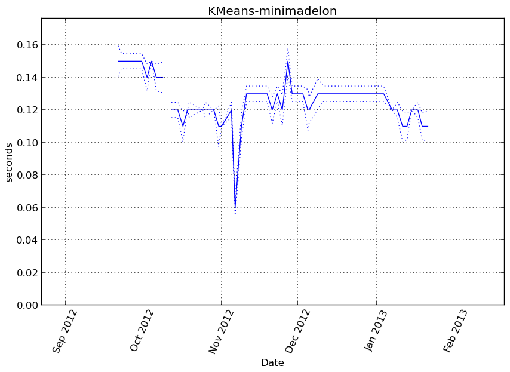Memory usage
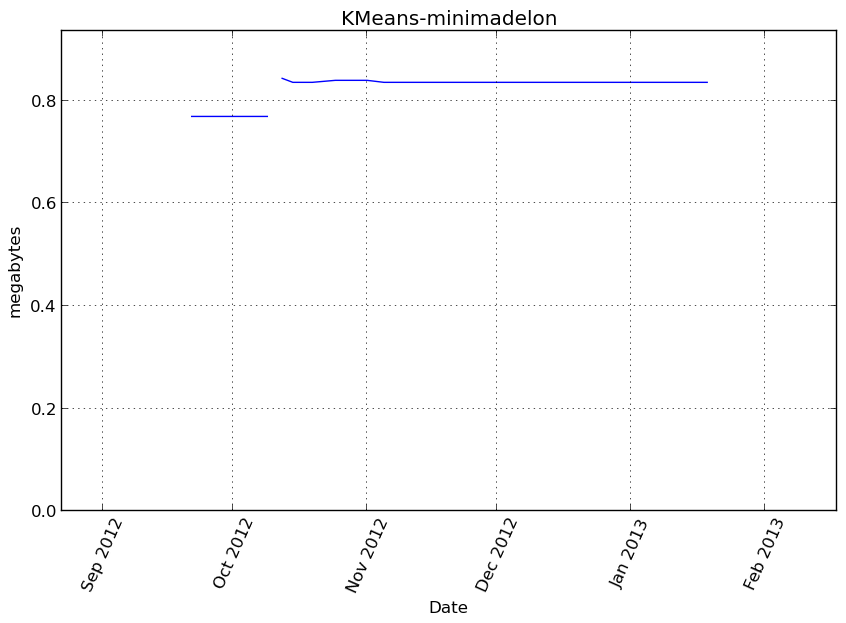Additional output
cProfile
13627 function calls in 0.142 seconds
Ordered by: cumulative time
ncalls tottime percall cumtime percall filename:lineno(function)
1 0.000 0.000 0.142 0.142 /home/slave/virtualenvs/cpython-2.7.2/lib/python2.7/site-packages/vbench/benchmark.py:286(f)
1 0.000 0.000 0.142 0.142 <f>:1(<module>)
1 0.000 0.000 0.142 0.142 /tmp/vb_sklearn/sklearn/cluster/k_means_.py:695(fit)
1 0.000 0.000 0.141 0.141 /tmp/vb_sklearn/sklearn/cluster/k_means_.py:151(k_means)
10 0.002 0.000 0.140 0.014 /tmp/vb_sklearn/sklearn/cluster/k_means_.py:298(_kmeans_single)
10 0.000 0.000 0.099 0.010 /tmp/vb_sklearn/sklearn/cluster/k_means_.py:477(_init_centroids)
10 0.019 0.002 0.099 0.010 /tmp/vb_sklearn/sklearn/cluster/k_means_.py:36(_k_init)
114 0.012 0.000 0.096 0.001 /tmp/vb_sklearn/sklearn/metrics/pairwise.py:98(euclidean_distances)
343 0.001 0.000 0.045 0.000 /tmp/vb_sklearn/sklearn/utils/validation.py:111(atleast2d_or_csr)
343 0.002 0.000 0.044 0.000 /tmp/vb_sklearn/sklearn/utils/validation.py:88(_atleast2d_or_sparse)
114 0.002 0.000 0.034 0.000 /tmp/vb_sklearn/sklearn/utils/extmath.py:70(safe_sparse_dot)
114 0.001 0.000 0.033 0.000 /tmp/vb_sklearn/sklearn/metrics/pairwise.py:56(check_pairwise_arrays)
114 0.030 0.000 0.030 0.000 {numpy.core._dotblas.dot}
24 0.001 0.000 0.029 0.001 /tmp/vb_sklearn/sklearn/cluster/k_means_.py:430(_labels_inertia)
24 0.004 0.000 0.027 0.001 /tmp/vb_sklearn/sklearn/cluster/k_means_.py:413(_labels_inertia_precompute_dense)
343 0.002 0.000 0.027 0.000 /tmp/vb_sklearn/sklearn/utils/validation.py:76(array2d)
686 0.007 0.000 0.025 0.000 /tmp/vb_sklearn/sklearn/utils/validation.py:15(_assert_all_finite)
1179 0.024 0.000 0.024 0.000 {method 'sum' of 'numpy.ndarray' objects}
1182 0.002 0.000 0.016 0.000 /home/slave/virtualenvs/cpython-2.7.2/lib/python2.7/site-packages/scipy/sparse/base.py:553(isspmatrix)
1182 0.009 0.000 0.014 0.000 /home/slave/virtualenvs/cpython-2.7.2/lib/python2.7/site-packages/scipy/sparse/sputils.py:116(_isinstance)
24 0.000 0.000 0.008 0.000 {sklearn.cluster._k_means._centers_dense}
24 0.008 0.000 0.008 0.000 _k_means.pyx:279(_centers_dense)
343 0.003 0.000 0.006 0.000 /home/slave/virtualenvs/cpython-2.7.2/lib/python2.7/site-packages/numpy/core/shape_base.py:58(atleast_2d)
138 0.000 0.000 0.004 0.000 /home/slave/virtualenvs/cpython-2.7.2/lib/python2.7/site-packages/numpy/core/fromnumeric.py:1379(sum)
2364 0.003 0.000 0.003 0.000 {method 'split' of 'str' objects}
1385 0.002 0.000 0.002 0.000 {isinstance}
343 0.001 0.000 0.002 0.000 /home/slave/virtualenvs/cpython-2.7.2/lib/python2.7/site-packages/numpy/core/numeric.py:237(asanyarray)
686 0.002 0.000 0.002 0.000 {numpy.core.multiarray.array}
343 0.001 0.000 0.001 0.000 /home/slave/virtualenvs/cpython-2.7.2/lib/python2.7/site-packages/numpy/core/numeric.py:167(asarray)
76 0.001 0.000 0.001 0.000 {method 'copy' of 'numpy.ndarray' objects}
80 0.001 0.000 0.001 0.000 {method 'random_sample' of 'mtrand.RandomState' objects}
32 0.000 0.000 0.001 0.000 /tmp/vb_sklearn/sklearn/utils/validation.py:234(check_random_state)
80 0.001 0.000 0.001 0.000 {method 'cumsum' of 'numpy.ndarray' objects}
1 0.000 0.000 0.001 0.001 /tmp/vb_sklearn/sklearn/cluster/k_means_.py:142(_tolerance)
80 0.000 0.000 0.000 0.000 /home/slave/virtualenvs/cpython-2.7.2/lib/python2.7/site-packages/numpy/core/fromnumeric.py:757(searchsorted)
82 0.000 0.000 0.000 0.000 {numpy.core.multiarray.empty}
1 0.000 0.000 0.000 0.000 /home/slave/virtualenvs/cpython-2.7.2/lib/python2.7/site-packages/numpy/core/fromnumeric.py:2470(var)
1 0.000 0.000 0.000 0.000 {method 'var' of 'numpy.ndarray' objects}
1 0.000 0.000 0.000 0.000 /tmp/vb_sklearn/sklearn/cluster/k_means_.py:667(_check_fit_data)
32 0.000 0.000 0.000 0.000 /home/slave/virtualenvs/cpython-2.7.2/lib/python2.7/abc.py:128(__instancecheck__)
1039 0.000 0.000 0.000 0.000 {len}
24 0.000 0.000 0.000 0.000 /home/slave/virtualenvs/cpython-2.7.2/lib/python2.7/site-packages/numpy/core/numeric.py:1791(ones)
80 0.000 0.000 0.000 0.000 {method 'searchsorted' of 'numpy.ndarray' objects}
343 0.000 0.000 0.000 0.000 {method 'append' of 'list' objects}
72 0.000 0.000 0.000 0.000 {method 'fill' of 'numpy.ndarray' objects}
35 0.000 0.000 0.000 0.000 {range}
1 0.000 0.000 0.000 0.000 /tmp/vb_sklearn/sklearn/cluster/k_means_.py:403(_squared_norms)
1 0.000 0.000 0.000 0.000 /tmp/vb_sklearn/sklearn/utils/validation.py:45(as_float_array)
2 0.000 0.000 0.000 0.000 {method 'mean' of 'numpy.ndarray' objects}
63 0.000 0.000 0.000 0.000 /home/slave/virtualenvs/cpython-2.7.2/lib/python2.7/_weakrefset.py:68(__contains__)
10 0.000 0.000 0.000 0.000 {numpy.core.multiarray.zeros}
1 0.000 0.000 0.000 0.000 /home/slave/virtualenvs/cpython-2.7.2/lib/python2.7/site-packages/numpy/core/fromnumeric.py:2299(mean)
32 0.000 0.000 0.000 0.000 {getattr}
10 0.000 0.000 0.000 0.000 {method 'randint' of 'mtrand.RandomState' objects}
1 0.000 0.000 0.000 0.000 {hasattr}
1 0.000 0.000 0.000 0.000 {method 'disable' of '_lsprof.Profiler' objects}
LineProfiler
Timer unit: 1e-06 s
File: /tmp/vb_sklearn/sklearn/cluster/k_means_.py
Function: fit at line 695
Total time: 0.157727 s
Line # Hits Time Per Hit % Time Line Contents
==============================================================
695 def fit(self, X, y=None):
696 """Compute k-means clustering.
697
698 Parameters
699 ----------
700 X : array-like or sparse matrix, shape=(n_samples, n_features)
701 """
702 1 35 35.0 0.0 random_state = check_random_state(self.random_state)
703 1 225 225.0 0.1 X = self._check_fit_data(X)
704
705 1 2 2.0 0.0 self.cluster_centers_, self.labels_, self.inertia_ = k_means(
706 1 2 2.0 0.0 X, n_clusters=self.n_clusters, init=self.init, n_init=self.n_init,
707 1 2 2.0 0.0 max_iter=self.max_iter, verbose=self.verbose,
708 1 2 2.0 0.0 precompute_distances=self.precompute_distances,
709 1 2 2.0 0.0 tol=self.tol, random_state=random_state, copy_x=self.copy_x,
710 1 157454 157454.0 99.8 n_jobs=self.n_jobs)
711 1 3 3.0 0.0 return self
KMeans-blobs¶
Benchmark setup
from sklearn.cluster import KMeans from deps import load_data kwargs = {'random_state': 0, 'n_clusters': 9} X, y, X_t, y_t = load_data('blobs') obj = KMeans(**kwargs)
Benchmark statement
obj.fit(X)
Execution time
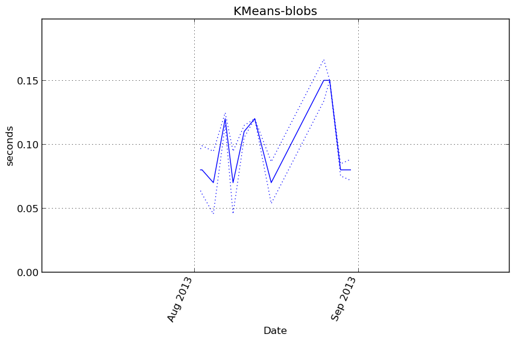Memory usage
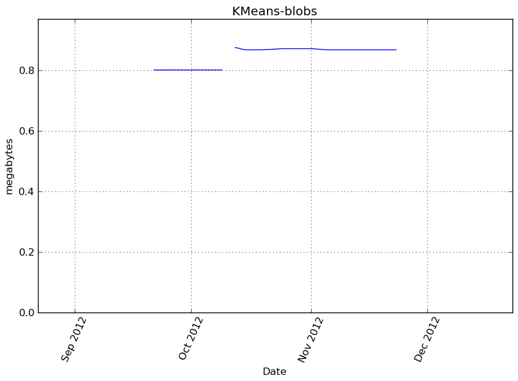Additional output
cProfile
13627 function calls in 0.076 seconds
Ordered by: cumulative time
ncalls tottime percall cumtime percall filename:lineno(function)
1 0.000 0.000 0.076 0.076 /home/slave/virtualenvs/cpython-2.7.2/lib/python2.7/site-packages/vbench/benchmark.py:286(f)
1 0.000 0.000 0.076 0.076 <f>:1(<module>)
1 0.000 0.000 0.076 0.076 /tmp/vb_sklearn/sklearn/cluster/k_means_.py:695(fit)
1 0.000 0.000 0.076 0.076 /tmp/vb_sklearn/sklearn/cluster/k_means_.py:151(k_means)
10 0.001 0.000 0.075 0.008 /tmp/vb_sklearn/sklearn/cluster/k_means_.py:298(_kmeans_single)
114 0.007 0.000 0.054 0.000 /tmp/vb_sklearn/sklearn/metrics/pairwise.py:98(euclidean_distances)
10 0.000 0.000 0.052 0.005 /tmp/vb_sklearn/sklearn/cluster/k_means_.py:477(_init_centroids)
10 0.007 0.001 0.052 0.005 /tmp/vb_sklearn/sklearn/cluster/k_means_.py:36(_k_init)
343 0.000 0.000 0.025 0.000 /tmp/vb_sklearn/sklearn/utils/validation.py:111(atleast2d_or_csr)
343 0.001 0.000 0.025 0.000 /tmp/vb_sklearn/sklearn/utils/validation.py:88(_atleast2d_or_sparse)
114 0.001 0.000 0.019 0.000 /tmp/vb_sklearn/sklearn/utils/extmath.py:70(safe_sparse_dot)
114 0.000 0.000 0.018 0.000 /tmp/vb_sklearn/sklearn/metrics/pairwise.py:56(check_pairwise_arrays)
24 0.000 0.000 0.017 0.001 /tmp/vb_sklearn/sklearn/cluster/k_means_.py:430(_labels_inertia)
24 0.004 0.000 0.017 0.001 /tmp/vb_sklearn/sklearn/cluster/k_means_.py:413(_labels_inertia_precompute_dense)
114 0.016 0.000 0.016 0.000 {numpy.core._dotblas.dot}
343 0.001 0.000 0.015 0.000 /tmp/vb_sklearn/sklearn/utils/validation.py:76(array2d)
686 0.004 0.000 0.014 0.000 /tmp/vb_sklearn/sklearn/utils/validation.py:15(_assert_all_finite)
1179 0.012 0.000 0.012 0.000 {method 'sum' of 'numpy.ndarray' objects}
1182 0.001 0.000 0.009 0.000 /home/slave/virtualenvs/cpython-2.7.2/lib/python2.7/site-packages/scipy/sparse/base.py:553(isspmatrix)
1182 0.005 0.000 0.008 0.000 /home/slave/virtualenvs/cpython-2.7.2/lib/python2.7/site-packages/scipy/sparse/sputils.py:116(_isinstance)
24 0.000 0.000 0.004 0.000 {sklearn.cluster._k_means._centers_dense}
24 0.004 0.000 0.004 0.000 _k_means.pyx:279(_centers_dense)
343 0.002 0.000 0.003 0.000 /home/slave/virtualenvs/cpython-2.7.2/lib/python2.7/site-packages/numpy/core/shape_base.py:58(atleast_2d)
2364 0.002 0.000 0.002 0.000 {method 'split' of 'str' objects}
138 0.000 0.000 0.002 0.000 /home/slave/virtualenvs/cpython-2.7.2/lib/python2.7/site-packages/numpy/core/fromnumeric.py:1379(sum)
1385 0.001 0.000 0.001 0.000 {isinstance}
343 0.001 0.000 0.001 0.000 /home/slave/virtualenvs/cpython-2.7.2/lib/python2.7/site-packages/numpy/core/numeric.py:237(asanyarray)
686 0.001 0.000 0.001 0.000 {numpy.core.multiarray.array}
343 0.000 0.000 0.001 0.000 /home/slave/virtualenvs/cpython-2.7.2/lib/python2.7/site-packages/numpy/core/numeric.py:167(asarray)
80 0.001 0.000 0.001 0.000 {method 'cumsum' of 'numpy.ndarray' objects}
80 0.000 0.000 0.000 0.000 {method 'random_sample' of 'mtrand.RandomState' objects}
32 0.000 0.000 0.000 0.000 /tmp/vb_sklearn/sklearn/utils/validation.py:234(check_random_state)
80 0.000 0.000 0.000 0.000 /home/slave/virtualenvs/cpython-2.7.2/lib/python2.7/site-packages/numpy/core/fromnumeric.py:757(searchsorted)
1 0.000 0.000 0.000 0.000 /tmp/vb_sklearn/sklearn/cluster/k_means_.py:142(_tolerance)
82 0.000 0.000 0.000 0.000 {numpy.core.multiarray.empty}
1 0.000 0.000 0.000 0.000 /home/slave/virtualenvs/cpython-2.7.2/lib/python2.7/site-packages/numpy/core/fromnumeric.py:2470(var)
1 0.000 0.000 0.000 0.000 {method 'var' of 'numpy.ndarray' objects}
1 0.000 0.000 0.000 0.000 /tmp/vb_sklearn/sklearn/cluster/k_means_.py:667(_check_fit_data)
32 0.000 0.000 0.000 0.000 /home/slave/virtualenvs/cpython-2.7.2/lib/python2.7/abc.py:128(__instancecheck__)
80 0.000 0.000 0.000 0.000 {method 'searchsorted' of 'numpy.ndarray' objects}
76 0.000 0.000 0.000 0.000 {method 'copy' of 'numpy.ndarray' objects}
24 0.000 0.000 0.000 0.000 /home/slave/virtualenvs/cpython-2.7.2/lib/python2.7/site-packages/numpy/core/numeric.py:1791(ones)
1039 0.000 0.000 0.000 0.000 {len}
72 0.000 0.000 0.000 0.000 {method 'fill' of 'numpy.ndarray' objects}
343 0.000 0.000 0.000 0.000 {method 'append' of 'list' objects}
1 0.000 0.000 0.000 0.000 /tmp/vb_sklearn/sklearn/cluster/k_means_.py:403(_squared_norms)
1 0.000 0.000 0.000 0.000 /tmp/vb_sklearn/sklearn/utils/validation.py:45(as_float_array)
35 0.000 0.000 0.000 0.000 {range}
63 0.000 0.000 0.000 0.000 /home/slave/virtualenvs/cpython-2.7.2/lib/python2.7/_weakrefset.py:68(__contains__)
2 0.000 0.000 0.000 0.000 {method 'mean' of 'numpy.ndarray' objects}
10 0.000 0.000 0.000 0.000 {numpy.core.multiarray.zeros}
1 0.000 0.000 0.000 0.000 /home/slave/virtualenvs/cpython-2.7.2/lib/python2.7/site-packages/numpy/core/fromnumeric.py:2299(mean)
32 0.000 0.000 0.000 0.000 {getattr}
10 0.000 0.000 0.000 0.000 {method 'randint' of 'mtrand.RandomState' objects}
1 0.000 0.000 0.000 0.000 {hasattr}
1 0.000 0.000 0.000 0.000 {method 'disable' of '_lsprof.Profiler' objects}
LineProfiler
Timer unit: 1e-06 s
File: /tmp/vb_sklearn/sklearn/cluster/k_means_.py
Function: fit at line 695
Total time: 0.084708 s
Line # Hits Time Per Hit % Time Line Contents
==============================================================
695 def fit(self, X, y=None):
696 """Compute k-means clustering.
697
698 Parameters
699 ----------
700 X : array-like or sparse matrix, shape=(n_samples, n_features)
701 """
702 1 21 21.0 0.0 random_state = check_random_state(self.random_state)
703 1 131 131.0 0.2 X = self._check_fit_data(X)
704
705 1 1 1.0 0.0 self.cluster_centers_, self.labels_, self.inertia_ = k_means(
706 1 1 1.0 0.0 X, n_clusters=self.n_clusters, init=self.init, n_init=self.n_init,
707 1 1 1.0 0.0 max_iter=self.max_iter, verbose=self.verbose,
708 1 1 1.0 0.0 precompute_distances=self.precompute_distances,
709 1 1 1.0 0.0 tol=self.tol, random_state=random_state, copy_x=self.copy_x,
710 1 84550 84550.0 99.8 n_jobs=self.n_jobs)
711 1 1 1.0 0.0 return self
MiniBatchKMeans-minimadelon¶
Benchmark setup
from sklearn.cluster import MiniBatchKMeans from deps import load_data kwargs = {'random_state': 0, 'n_clusters': 9} X, y, X_t, y_t = load_data('minimadelon') obj = MiniBatchKMeans(**kwargs)
Benchmark statement
obj.fit(X)
Execution time

Memory usage
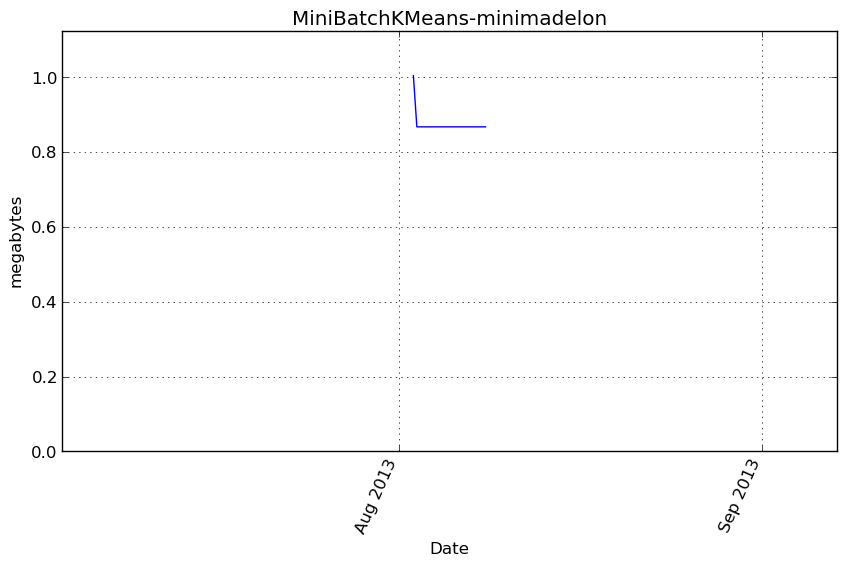Additional output
cProfile
6062 function calls in 0.145 seconds
Ordered by: cumulative time
ncalls tottime percall cumtime percall filename:lineno(function)
1 0.000 0.000 0.145 0.145 /home/slave/virtualenvs/cpython-2.7.2/lib/python2.7/site-packages/vbench/benchmark.py:286(f)
1 0.000 0.000 0.145 0.145 <f>:1(<module>)
1 0.035 0.035 0.145 0.145 /tmp/vb_sklearn/sklearn/cluster/k_means_.py:1090(fit)
15 0.047 0.003 0.080 0.005 /tmp/vb_sklearn/sklearn/cluster/k_means_.py:799(_mini_batch_step)
46 0.004 0.000 0.043 0.001 /tmp/vb_sklearn/sklearn/metrics/pairwise.py:98(euclidean_distances)
19 0.000 0.000 0.029 0.002 /tmp/vb_sklearn/sklearn/cluster/k_means_.py:430(_labels_inertia)
19 0.004 0.000 0.028 0.001 /tmp/vb_sklearn/sklearn/cluster/k_means_.py:413(_labels_inertia_precompute_dense)
3 0.000 0.000 0.025 0.008 /tmp/vb_sklearn/sklearn/cluster/k_means_.py:477(_init_centroids)
3 0.005 0.002 0.025 0.008 /tmp/vb_sklearn/sklearn/cluster/k_means_.py:36(_k_init)
138 0.000 0.000 0.018 0.000 /tmp/vb_sklearn/sklearn/utils/validation.py:111(atleast2d_or_csr)
46 0.001 0.000 0.018 0.000 /tmp/vb_sklearn/sklearn/utils/extmath.py:70(safe_sparse_dot)
138 0.001 0.000 0.018 0.000 /tmp/vb_sklearn/sklearn/utils/validation.py:88(_atleast2d_or_sparse)
704 0.017 0.000 0.017 0.000 {method 'sum' of 'numpy.ndarray' objects}
46 0.016 0.000 0.016 0.000 {numpy.core._dotblas.dot}
46 0.000 0.000 0.014 0.000 /tmp/vb_sklearn/sklearn/metrics/pairwise.py:56(check_pairwise_arrays)
277 0.003 0.000 0.011 0.000 /tmp/vb_sklearn/sklearn/utils/validation.py:15(_assert_all_finite)
138 0.001 0.000 0.010 0.000 /tmp/vb_sklearn/sklearn/utils/validation.py:76(array2d)
173 0.001 0.000 0.007 0.000 /home/slave/virtualenvs/cpython-2.7.2/lib/python2.7/site-packages/numpy/core/fromnumeric.py:1379(sum)
480 0.001 0.000 0.006 0.000 /home/slave/virtualenvs/cpython-2.7.2/lib/python2.7/site-packages/scipy/sparse/base.py:553(isspmatrix)
480 0.003 0.000 0.005 0.000 /home/slave/virtualenvs/cpython-2.7.2/lib/python2.7/site-packages/scipy/sparse/sputils.py:116(_isinstance)
138 0.001 0.000 0.002 0.000 /home/slave/virtualenvs/cpython-2.7.2/lib/python2.7/site-packages/numpy/core/shape_base.py:58(atleast_2d)
960 0.001 0.000 0.001 0.000 {method 'split' of 'str' objects}
666 0.001 0.000 0.001 0.000 {isinstance}
138 0.000 0.000 0.001 0.000 /home/slave/virtualenvs/cpython-2.7.2/lib/python2.7/site-packages/numpy/core/numeric.py:237(asanyarray)
277 0.001 0.000 0.001 0.000 {numpy.core.multiarray.array}
138 0.000 0.000 0.000 0.000 /home/slave/virtualenvs/cpython-2.7.2/lib/python2.7/site-packages/numpy/core/numeric.py:167(asarray)
12 0.000 0.000 0.000 0.000 /tmp/vb_sklearn/sklearn/cluster/k_means_.py:915(_mini_batch_convergence)
60 0.000 0.000 0.000 0.000 {numpy.core.multiarray.empty}
19 0.000 0.000 0.000 0.000 /home/slave/virtualenvs/cpython-2.7.2/lib/python2.7/site-packages/numpy/core/numeric.py:1791(ones)
12 0.000 0.000 0.000 0.000 {method 'min' of 'numpy.ndarray' objects}
57 0.000 0.000 0.000 0.000 {method 'fill' of 'numpy.ndarray' objects}
1 0.000 0.000 0.000 0.000 /tmp/vb_sklearn/sklearn/utils/validation.py:127(check_arrays)
24 0.000 0.000 0.000 0.000 {method 'random_sample' of 'mtrand.RandomState' objects}
24 0.000 0.000 0.000 0.000 {method 'cumsum' of 'numpy.ndarray' objects}
13 0.000 0.000 0.000 0.000 {method 'random_integers' of 'mtrand.RandomState' objects}
7 0.000 0.000 0.000 0.000 /tmp/vb_sklearn/sklearn/utils/validation.py:234(check_random_state)
1 0.000 0.000 0.000 0.000 /tmp/vb_sklearn/sklearn/cluster/k_means_.py:403(_squared_norms)
24 0.000 0.000 0.000 0.000 /home/slave/virtualenvs/cpython-2.7.2/lib/python2.7/site-packages/numpy/core/fromnumeric.py:757(searchsorted)
418 0.000 0.000 0.000 0.000 {len}
139 0.000 0.000 0.000 0.000 {method 'append' of 'list' objects}
24 0.000 0.000 0.000 0.000 {method 'searchsorted' of 'numpy.ndarray' objects}
7 0.000 0.000 0.000 0.000 /home/slave/virtualenvs/cpython-2.7.2/lib/python2.7/abc.py:128(__instancecheck__)
35 0.000 0.000 0.000 0.000 {range}
9 0.000 0.000 0.000 0.000 {numpy.core.multiarray.zeros}
13 0.000 0.000 0.000 0.000 /home/slave/virtualenvs/cpython-2.7.2/lib/python2.7/_weakrefset.py:68(__contains__)
48 0.000 0.000 0.000 0.000 {method 'get' of 'dict' objects}
1 0.000 0.000 0.000 0.000 /home/slave/virtualenvs/cpython-2.7.2/lib/python2.7/site-packages/numpy/core/numeric.py:289(ascontiguousarray)
2 0.000 0.000 0.000 0.000 /tmp/vb_sklearn/sklearn/utils/validation.py:120(_num_samples)
5 0.000 0.000 0.000 0.000 {hasattr}
7 0.000 0.000 0.000 0.000 {getattr}
3 0.000 0.000 0.000 0.000 {method 'randint' of 'mtrand.RandomState' objects}
5 0.000 0.000 0.000 0.000 {method 'pop' of 'dict' objects}
1 0.000 0.000 0.000 0.000 {method 'disable' of '_lsprof.Profiler' objects}
LineProfiler
Timer unit: 1e-06 s
File: /tmp/vb_sklearn/sklearn/cluster/k_means_.py
Function: fit at line 1090
Total time: 0.163364 s
Line # Hits Time Per Hit % Time Line Contents
==============================================================
1090 def fit(self, X, y=None):
1091 """Compute the centroids on X by chunking it into mini-batches.
1092
1093 Parameters
1094 ----------
1095 X: array-like, shape = [n_samples, n_features]
1096 Coordinates of the data points to cluster
1097 """
1098 1 38 38.0 0.0 random_state = check_random_state(self.random_state)
1099 1 5 5.0 0.0 X = check_arrays(X, sparse_format="csr", copy=False,
1100 1 174 174.0 0.1 check_ccontiguous=True, dtype=np.float64)[0]
1101 1 6 6.0 0.0 n_samples, n_features = X.shape
1102 1 5 5.0 0.0 if n_samples < self.n_clusters:
1103 raise ValueError("Number of samples smaller than number "
1104 "of clusters.")
1105
1106 1 9 9.0 0.0 if hasattr(self.init, '__array__'):
1107 self.init = np.ascontiguousarray(self.init, dtype=np.float64)
1108
1109 1 136 136.0 0.1 x_squared_norms = _squared_norms(X)
1110
1111 1 6 6.0 0.0 if self.tol > 0.0:
1112 tol = _tolerance(X, self.tol)
1113
1114 # using tol-based early stopping needs the allocation of a
1115 # dedicated before which can be expensive for high dim data:
1116 # hence we allocate it outside of the main loop
1117 old_center_buffer = np.zeros(n_features, np.double)
1118 else:
1119 1 4 4.0 0.0 tol = 0.0
1120 # no need for the center buffer if tol-based early stopping is
1121 # disabled
1122 1 12 12.0 0.0 old_center_buffer = np.zeros(0, np.double)
1123
1124 1 11 11.0 0.0 distances = np.zeros(self.batch_size, dtype=np.float64)
1125 1 21 21.0 0.0 n_batches = int(np.ceil(float(n_samples) / self.batch_size))
1126 1 6 6.0 0.0 n_iter = int(self.max_iter * n_batches)
1127
1128 1 5 5.0 0.0 init_size = self.init_size
1129 1 4 4.0 0.0 if init_size is None:
1130 1 4 4.0 0.0 init_size = 3 * self.batch_size
1131 1 4 4.0 0.0 if init_size > n_samples:
1132 1 4 4.0 0.0 init_size = n_samples
1133 1 6 6.0 0.0 self.init_size_ = init_size
1134
1135 1 5 5.0 0.0 validation_indices = random_state.random_integers(
1136 1 17 17.0 0.0 0, n_samples - 1, init_size)
1137 1 859 859.0 0.5 X_valid = X[validation_indices]
1138 1 11 11.0 0.0 x_squared_norms_valid = x_squared_norms[validation_indices]
1139
1140 # perform several inits with random sub-sets
1141 1 4 4.0 0.0 best_inertia = None
1142 4 23 5.8 0.0 for init_idx in range(self.n_init):
1143 3 14 4.7 0.0 if self.verbose:
1144 print "Init %d/%d with method: %s" % (
1145 init_idx + 1, self.n_init, self.init)
1146 3 39 13.0 0.0 counts = np.zeros(self.n_clusters, dtype=np.int32)
1147
1148 # TODO: once the `k_means` function works with sparse input we
1149 # should refactor the following init to use it instead.
1150
1151 # Initialize the centers using only a fraction of the data as we
1152 # expect n_samples to be very large when using MiniBatchKMeans
1153 3 12 4.0 0.0 cluster_centers = _init_centroids(
1154 3 14 4.7 0.0 X, self.n_clusters, self.init,
1155 3 12 4.0 0.0 random_state=random_state,
1156 3 12 4.0 0.0 x_squared_norms=x_squared_norms,
1157 3 33518 11172.7 20.5 init_size=init_size)
1158
1159 # Compute the label assignement on the init dataset
1160 3 16 5.3 0.0 batch_inertia, centers_squared_diff = _mini_batch_step(
1161 3 44 14.7 0.0 X_valid, x_squared_norms[validation_indices],
1162 3 15 5.0 0.0 cluster_centers, counts, old_center_buffer, False,
1163 3 10343 3447.7 6.3 distances=distances, verbose=self.verbose)
1164
1165 # Keep only the best cluster centers across independent inits on
1166 # the common validation set
1167 3 17 5.7 0.0 _, inertia = _labels_inertia(X_valid, x_squared_norms_valid,
1168 3 3972 1324.0 2.4 cluster_centers)
1169 3 18 6.0 0.0 if self.verbose:
1170 print "Inertia for init %d/%d: %f" % (
1171 init_idx + 1, self.n_init, inertia)
1172 3 15 5.0 0.0 if best_inertia is None or inertia < best_inertia:
1173 2 11 5.5 0.0 self.cluster_centers_ = cluster_centers
1174 2 10 5.0 0.0 self.counts_ = counts
1175 2 8 4.0 0.0 best_inertia = inertia
1176
1177 # Empty context to be used inplace by the convergence check routine
1178 1 4 4.0 0.0 convergence_context = {}
1179
1180 # Perform the iterative optimization until the final convergence
1181 # criterion
1182 12 59 4.9 0.0 for iteration_idx in xrange(n_iter):
1183
1184 # Sample a minibatch from the full dataset
1185 12 64 5.3 0.0 minibatch_indices = random_state.random_integers(
1186 12 234 19.5 0.1 0, n_samples - 1, self.batch_size)
1187
1188 # Perform the actual update step on the minibatch data
1189 12 56 4.7 0.0 batch_inertia, centers_squared_diff = _mini_batch_step(
1190 12 33790 2815.8 20.7 X[minibatch_indices], x_squared_norms[minibatch_indices],
1191 12 76 6.3 0.0 self.cluster_centers_, self.counts_,
1192 12 59 4.9 0.0 old_center_buffer, tol > 0.0, distances=distances,
1193 # Here we randomly choose whether to perform
1194 # random reassignment: the choice is done as a function
1195 # of the iteration index, and the minimum number of
1196 # counts, in order to force this reassignment to happen
1197 # every once in a while
1198 12 53 4.4 0.0 random_reassign=((iteration_idx + 1)
1199 12 618 51.5 0.4 % (10 + self.counts_.min()) == 0),
1200 12 66 5.5 0.0 random_state=random_state,
1201 12 52 4.3 0.0 reassignment_ratio=self.reassignment_ratio,
1202 12 76496 6374.7 46.8 verbose=self.verbose)
1203
1204 # Monitor convergence and do early stopping if necessary
1205 12 69 5.8 0.0 if _mini_batch_convergence(
1206 12 55 4.6 0.0 self, iteration_idx, n_iter, tol, n_samples,
1207 12 54 4.5 0.0 centers_squared_diff, batch_inertia, convergence_context,
1208 12 727 60.6 0.4 verbose=self.verbose):
1209 1 5 5.0 0.0 break
1210
1211 1 4 4.0 0.0 if self.compute_labels:
1212 1 4 4.0 0.0 if self.verbose:
1213 print 'Computing label assignements and total inertia'
1214 1 4 4.0 0.0 self.labels_, self.inertia_ = _labels_inertia(
1215 1 1341 1341.0 0.8 X, x_squared_norms, self.cluster_centers_)
1216
1217 1 5 5.0 0.0 return self
MiniBatchKMeans-madelon¶
Benchmark setup
from sklearn.cluster import MiniBatchKMeans from deps import load_data kwargs = {'random_state': 0, 'n_clusters': 9} X, y, X_t, y_t = load_data('madelon') obj = MiniBatchKMeans(**kwargs)
Benchmark statement
obj.fit(X)
Execution time
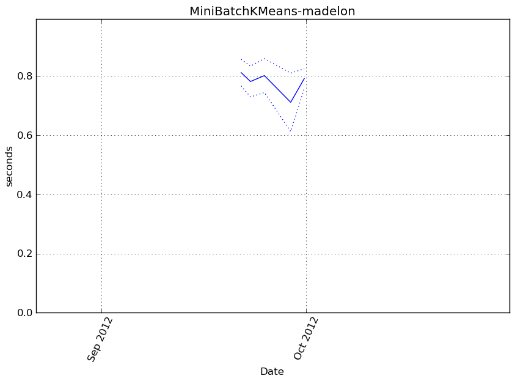Memory usage
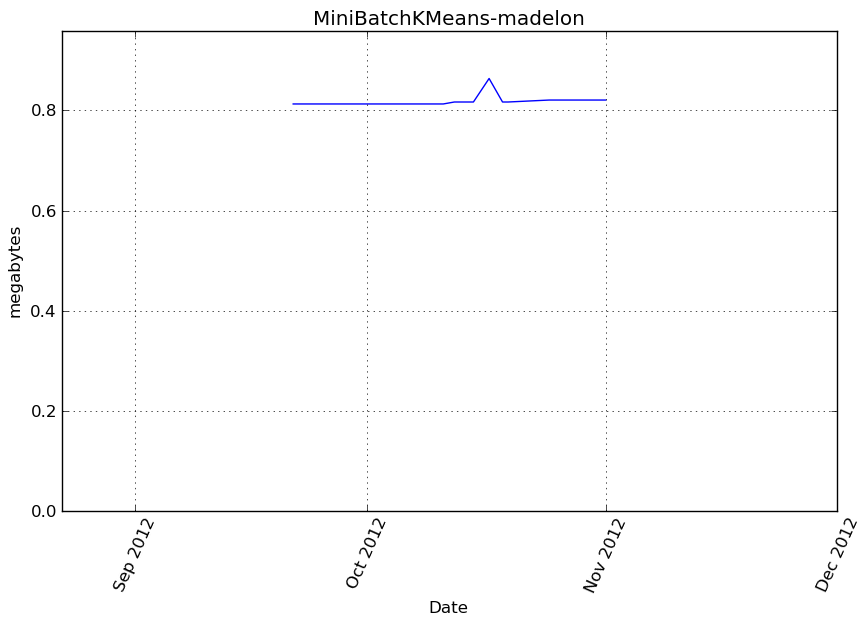Additional output
cProfile
13725 function calls in 0.791 seconds
Ordered by: cumulative time
ncalls tottime percall cumtime percall filename:lineno(function)
1 0.000 0.000 0.791 0.791 /home/slave/virtualenvs/cpython-2.7.2/lib/python2.7/site-packages/vbench/benchmark.py:286(f)
1 0.000 0.000 0.791 0.791 <f>:1(<module>)
1 0.156 0.156 0.791 0.791 /tmp/vb_sklearn/sklearn/cluster/k_means_.py:1090(fit)
61 0.215 0.004 0.431 0.007 /tmp/vb_sklearn/sklearn/cluster/k_means_.py:799(_mini_batch_step)
92 0.011 0.000 0.301 0.003 /tmp/vb_sklearn/sklearn/metrics/pairwise.py:98(euclidean_distances)
65 0.001 0.000 0.250 0.004 /tmp/vb_sklearn/sklearn/cluster/k_means_.py:430(_labels_inertia)
65 0.012 0.000 0.247 0.004 /tmp/vb_sklearn/sklearn/cluster/k_means_.py:413(_labels_inertia_precompute_dense)
92 0.001 0.000 0.216 0.002 /tmp/vb_sklearn/sklearn/utils/extmath.py:70(safe_sparse_dot)
92 0.212 0.002 0.212 0.002 {numpy.core._dotblas.dot}
1908 0.107 0.000 0.107 0.000 {method 'sum' of 'numpy.ndarray' objects}
3 0.025 0.008 0.101 0.034 /tmp/vb_sklearn/sklearn/cluster/k_means_.py:477(_init_centroids)
3 0.006 0.002 0.076 0.025 /tmp/vb_sklearn/sklearn/cluster/k_means_.py:36(_k_init)
276 0.001 0.000 0.070 0.000 /tmp/vb_sklearn/sklearn/utils/validation.py:111(atleast2d_or_csr)
276 0.001 0.000 0.069 0.000 /tmp/vb_sklearn/sklearn/utils/validation.py:88(_atleast2d_or_sparse)
92 0.001 0.000 0.061 0.001 /tmp/vb_sklearn/sklearn/metrics/pairwise.py:56(check_pairwise_arrays)
553 0.006 0.000 0.058 0.000 /tmp/vb_sklearn/sklearn/utils/validation.py:15(_assert_all_finite)
641 0.002 0.000 0.048 0.000 /home/slave/virtualenvs/cpython-2.7.2/lib/python2.7/site-packages/numpy/core/fromnumeric.py:1379(sum)
276 0.002 0.000 0.038 0.000 /tmp/vb_sklearn/sklearn/utils/validation.py:76(array2d)
986 0.002 0.000 0.013 0.000 /home/slave/virtualenvs/cpython-2.7.2/lib/python2.7/site-packages/scipy/sparse/base.py:553(isspmatrix)
986 0.007 0.000 0.011 0.000 /home/slave/virtualenvs/cpython-2.7.2/lib/python2.7/site-packages/scipy/sparse/sputils.py:116(_isinstance)
1 0.006 0.006 0.009 0.009 /tmp/vb_sklearn/sklearn/cluster/k_means_.py:403(_squared_norms)
276 0.002 0.000 0.004 0.000 /home/slave/virtualenvs/cpython-2.7.2/lib/python2.7/site-packages/numpy/core/shape_base.py:58(atleast_2d)
1 0.000 0.000 0.003 0.003 /tmp/vb_sklearn/sklearn/utils/validation.py:127(check_arrays)
1640 0.003 0.000 0.003 0.000 {isinstance}
1972 0.002 0.000 0.002 0.000 {method 'split' of 'str' objects}
276 0.001 0.000 0.002 0.000 /home/slave/virtualenvs/cpython-2.7.2/lib/python2.7/site-packages/numpy/core/numeric.py:237(asanyarray)
58 0.001 0.000 0.002 0.000 /tmp/vb_sklearn/sklearn/cluster/k_means_.py:915(_mini_batch_convergence)
553 0.001 0.000 0.001 0.000 {numpy.core.multiarray.array}
198 0.001 0.000 0.001 0.000 {numpy.core.multiarray.empty}
276 0.000 0.000 0.001 0.000 /home/slave/virtualenvs/cpython-2.7.2/lib/python2.7/site-packages/numpy/core/numeric.py:167(asarray)
58 0.001 0.000 0.001 0.000 {method 'min' of 'numpy.ndarray' objects}
65 0.000 0.000 0.001 0.000 /home/slave/virtualenvs/cpython-2.7.2/lib/python2.7/site-packages/numpy/core/numeric.py:1791(ones)
62 0.001 0.000 0.001 0.000 {method 'random_integers' of 'mtrand.RandomState' objects}
195 0.001 0.000 0.001 0.000 {method 'fill' of 'numpy.ndarray' objects}
832 0.000 0.000 0.000 0.000 {len}
24 0.000 0.000 0.000 0.000 {method 'cumsum' of 'numpy.ndarray' objects}
7 0.000 0.000 0.000 0.000 /tmp/vb_sklearn/sklearn/utils/validation.py:234(check_random_state)
277 0.000 0.000 0.000 0.000 {method 'append' of 'list' objects}
24 0.000 0.000 0.000 0.000 {method 'random_sample' of 'mtrand.RandomState' objects}
24 0.000 0.000 0.000 0.000 /home/slave/virtualenvs/cpython-2.7.2/lib/python2.7/site-packages/numpy/core/fromnumeric.py:757(searchsorted)
127 0.000 0.000 0.000 0.000 {range}
7 0.000 0.000 0.000 0.000 /home/slave/virtualenvs/cpython-2.7.2/lib/python2.7/abc.py:128(__instancecheck__)
24 0.000 0.000 0.000 0.000 {method 'searchsorted' of 'numpy.ndarray' objects}
9 0.000 0.000 0.000 0.000 {numpy.core.multiarray.zeros}
232 0.000 0.000 0.000 0.000 {method 'get' of 'dict' objects}
13 0.000 0.000 0.000 0.000 /home/slave/virtualenvs/cpython-2.7.2/lib/python2.7/_weakrefset.py:68(__contains__)
1 0.000 0.000 0.000 0.000 /home/slave/virtualenvs/cpython-2.7.2/lib/python2.7/site-packages/numpy/core/numeric.py:289(ascontiguousarray)
2 0.000 0.000 0.000 0.000 /tmp/vb_sklearn/sklearn/utils/validation.py:120(_num_samples)
5 0.000 0.000 0.000 0.000 {hasattr}
7 0.000 0.000 0.000 0.000 {getattr}
3 0.000 0.000 0.000 0.000 {method 'randint' of 'mtrand.RandomState' objects}
5 0.000 0.000 0.000 0.000 {method 'pop' of 'dict' objects}
1 0.000 0.000 0.000 0.000 {method 'disable' of '_lsprof.Profiler' objects}
LineProfiler
Timer unit: 1e-06 s
File: /tmp/vb_sklearn/sklearn/cluster/k_means_.py
Function: fit at line 1090
Total time: 0.960841 s
Line # Hits Time Per Hit % Time Line Contents
==============================================================
1090 def fit(self, X, y=None):
1091 """Compute the centroids on X by chunking it into mini-batches.
1092
1093 Parameters
1094 ----------
1095 X: array-like, shape = [n_samples, n_features]
1096 Coordinates of the data points to cluster
1097 """
1098 1 28 28.0 0.0 random_state = check_random_state(self.random_state)
1099 1 3 3.0 0.0 X = check_arrays(X, sparse_format="csr", copy=False,
1100 1 1735 1735.0 0.2 check_ccontiguous=True, dtype=np.float64)[0]
1101 1 4 4.0 0.0 n_samples, n_features = X.shape
1102 1 4 4.0 0.0 if n_samples < self.n_clusters:
1103 raise ValueError("Number of samples smaller than number "
1104 "of clusters.")
1105
1106 1 9 9.0 0.0 if hasattr(self.init, '__array__'):
1107 self.init = np.ascontiguousarray(self.init, dtype=np.float64)
1108
1109 1 3795 3795.0 0.4 x_squared_norms = _squared_norms(X)
1110
1111 1 5 5.0 0.0 if self.tol > 0.0:
1112 tol = _tolerance(X, self.tol)
1113
1114 # using tol-based early stopping needs the allocation of a
1115 # dedicated before which can be expensive for high dim data:
1116 # hence we allocate it outside of the main loop
1117 old_center_buffer = np.zeros(n_features, np.double)
1118 else:
1119 1 2 2.0 0.0 tol = 0.0
1120 # no need for the center buffer if tol-based early stopping is
1121 # disabled
1122 1 15 15.0 0.0 old_center_buffer = np.zeros(0, np.double)
1123
1124 1 8 8.0 0.0 distances = np.zeros(self.batch_size, dtype=np.float64)
1125 1 24 24.0 0.0 n_batches = int(np.ceil(float(n_samples) / self.batch_size))
1126 1 3 3.0 0.0 n_iter = int(self.max_iter * n_batches)
1127
1128 1 3 3.0 0.0 init_size = self.init_size
1129 1 3 3.0 0.0 if init_size is None:
1130 1 3 3.0 0.0 init_size = 3 * self.batch_size
1131 1 3 3.0 0.0 if init_size > n_samples:
1132 init_size = n_samples
1133 1 5 5.0 0.0 self.init_size_ = init_size
1134
1135 1 5 5.0 0.0 validation_indices = random_state.random_integers(
1136 1 18 18.0 0.0 0, n_samples - 1, init_size)
1137 1 4698 4698.0 0.5 X_valid = X[validation_indices]
1138 1 13 13.0 0.0 x_squared_norms_valid = x_squared_norms[validation_indices]
1139
1140 # perform several inits with random sub-sets
1141 1 2 2.0 0.0 best_inertia = None
1142 4 15 3.8 0.0 for init_idx in range(self.n_init):
1143 3 8 2.7 0.0 if self.verbose:
1144 print "Init %d/%d with method: %s" % (
1145 init_idx + 1, self.n_init, self.init)
1146 3 24 8.0 0.0 counts = np.zeros(self.n_clusters, dtype=np.int32)
1147
1148 # TODO: once the `k_means` function works with sparse input we
1149 # should refactor the following init to use it instead.
1150
1151 # Initialize the centers using only a fraction of the data as we
1152 # expect n_samples to be very large when using MiniBatchKMeans
1153 3 7 2.3 0.0 cluster_centers = _init_centroids(
1154 3 8 2.7 0.0 X, self.n_clusters, self.init,
1155 3 7 2.3 0.0 random_state=random_state,
1156 3 7 2.3 0.0 x_squared_norms=x_squared_norms,
1157 3 119447 39815.7 12.4 init_size=init_size)
1158
1159 # Compute the label assignement on the init dataset
1160 3 10 3.3 0.0 batch_inertia, centers_squared_diff = _mini_batch_step(
1161 3 33 11.0 0.0 X_valid, x_squared_norms[validation_indices],
1162 3 9 3.0 0.0 cluster_centers, counts, old_center_buffer, False,
1163 3 91170 30390.0 9.5 distances=distances, verbose=self.verbose)
1164
1165 # Keep only the best cluster centers across independent inits on
1166 # the common validation set
1167 3 9 3.0 0.0 _, inertia = _labels_inertia(X_valid, x_squared_norms_valid,
1168 3 6271 2090.3 0.7 cluster_centers)
1169 3 11 3.7 0.0 if self.verbose:
1170 print "Inertia for init %d/%d: %f" % (
1171 init_idx + 1, self.n_init, inertia)
1172 3 8 2.7 0.0 if best_inertia is None or inertia < best_inertia:
1173 2 9 4.5 0.0 self.cluster_centers_ = cluster_centers
1174 2 5 2.5 0.0 self.counts_ = counts
1175 2 5 2.5 0.0 best_inertia = inertia
1176
1177 # Empty context to be used inplace by the convergence check routine
1178 1 3 3.0 0.0 convergence_context = {}
1179
1180 # Perform the iterative optimization until the final convergence
1181 # criterion
1182 58 170 2.9 0.0 for iteration_idx in xrange(n_iter):
1183
1184 # Sample a minibatch from the full dataset
1185 58 184 3.2 0.0 minibatch_indices = random_state.random_integers(
1186 58 725 12.5 0.1 0, n_samples - 1, self.batch_size)
1187
1188 # Perform the actual update step on the minibatch data
1189 58 162 2.8 0.0 batch_inertia, centers_squared_diff = _mini_batch_step(
1190 58 228460 3939.0 23.8 X[minibatch_indices], x_squared_norms[minibatch_indices],
1191 58 243 4.2 0.0 self.cluster_centers_, self.counts_,
1192 58 180 3.1 0.0 old_center_buffer, tol > 0.0, distances=distances,
1193 # Here we randomly choose whether to perform
1194 # random reassignment: the choice is done as a function
1195 # of the iteration index, and the minimum number of
1196 # counts, in order to force this reassignment to happen
1197 # every once in a while
1198 58 175 3.0 0.0 random_reassign=((iteration_idx + 1)
1199 58 1966 33.9 0.2 % (10 + self.counts_.min()) == 0),
1200 58 283 4.9 0.0 random_state=random_state,
1201 58 193 3.3 0.0 reassignment_ratio=self.reassignment_ratio,
1202 58 433395 7472.3 45.1 verbose=self.verbose)
1203
1204 # Monitor convergence and do early stopping if necessary
1205 58 224 3.9 0.0 if _mini_batch_convergence(
1206 58 171 2.9 0.0 self, iteration_idx, n_iter, tol, n_samples,
1207 58 158 2.7 0.0 centers_squared_diff, batch_inertia, convergence_context,
1208 58 2356 40.6 0.2 verbose=self.verbose):
1209 1 5 5.0 0.0 break
1210
1211 1 5 5.0 0.0 if self.compute_labels:
1212 1 5 5.0 0.0 if self.verbose:
1213 print 'Computing label assignements and total inertia'
1214 1 5 5.0 0.0 self.labels_, self.inertia_ = _labels_inertia(
1215 1 64317 64317.0 6.7 X, x_squared_norms, self.cluster_centers_)
1216
1217 1 5 5.0 0.0 return self
Ward-minimadelon¶
Benchmark setup
from sklearn.cluster import Ward from deps import load_data kwargs = {} X, y, X_t, y_t = load_data('minimadelon') obj = Ward(**kwargs)
Benchmark statement
obj.fit(X)
Execution time
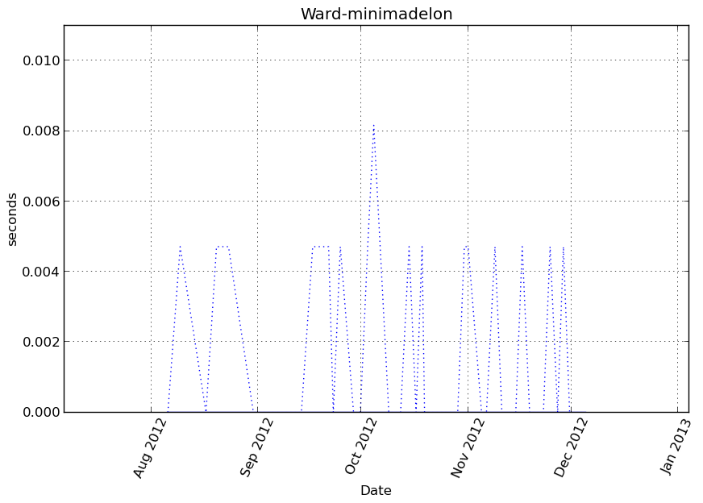Memory usage
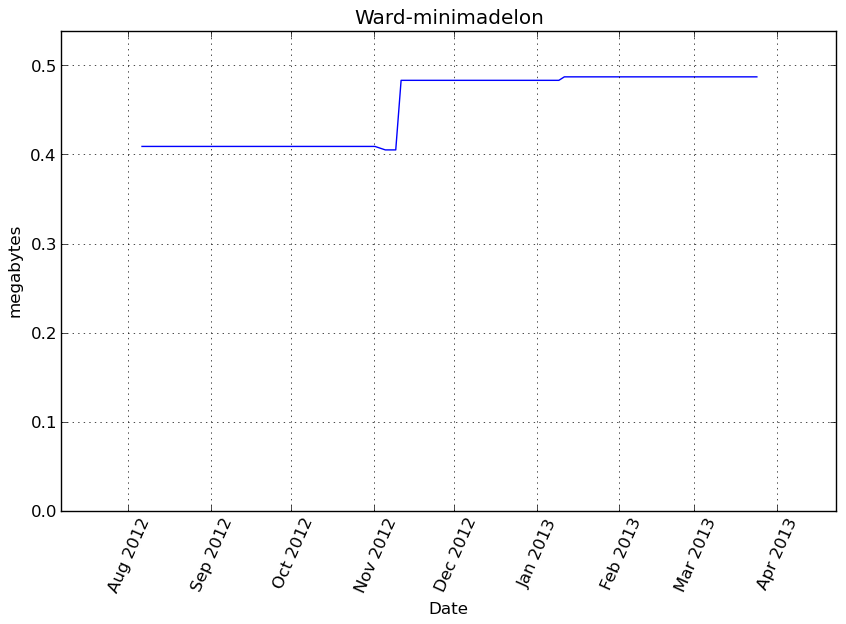Additional output
cProfile
70 function calls in 0.002 seconds
Ordered by: cumulative time
ncalls tottime percall cumtime percall filename:lineno(function)
1 0.000 0.000 0.002 0.002 /home/slave/virtualenvs/cpython-2.7.2/lib/python2.7/site-packages/vbench/benchmark.py:286(f)
1 0.000 0.000 0.002 0.002 <f>:1(<module>)
1 0.000 0.000 0.002 0.002 /tmp/vb_sklearn/sklearn/cluster/hierarchical.py:335(fit)
1 0.000 0.000 0.001 0.001 /tmp/vb_sklearn/sklearn/cluster/hierarchical.py:30(ward_tree)
1 0.000 0.000 0.001 0.001 /home/slave/virtualenvs/cpython-2.7.2/lib/python2.7/site-packages/scipy/cluster/hierarchy.py:423(ward)
1 0.000 0.000 0.001 0.001 /home/slave/virtualenvs/cpython-2.7.2/lib/python2.7/site-packages/scipy/cluster/hierarchy.py:464(linkage)
1 0.000 0.000 0.001 0.001 /home/slave/virtualenvs/cpython-2.7.2/lib/python2.7/site-packages/scipy/spatial/distance.py:916(pdist)
1 0.001 0.001 0.001 0.001 {scipy.spatial._distance_wrap.pdist_euclidean_wrap}
1 0.000 0.000 0.000 0.000 {scipy.cluster._hierarchy_wrap.linkage_euclid_wrap}
1 0.000 0.000 0.000 0.000 /tmp/vb_sklearn/sklearn/cluster/hierarchical.py:228(_hc_cut)
1 0.000 0.000 0.000 0.000 /tmp/vb_sklearn/sklearn/utils/validation.py:76(array2d)
2 0.000 0.000 0.000 0.000 {sklearn.cluster._hierarchical._hc_get_descendent}
1 0.000 0.000 0.000 0.000 /tmp/vb_sklearn/sklearn/utils/validation.py:15(_assert_all_finite)
1 0.000 0.000 0.000 0.000 /home/slave/virtualenvs/cpython-2.7.2/lib/python2.7/site-packages/scipy/spatial/distance.py:132(_copy_arrays_if_base_present)
1 0.000 0.000 0.000 0.000 /home/slave/virtualenvs/cpython-2.7.2/lib/python2.7/site-packages/scipy/spatial/distance.py:120(_copy_array_if_base_present)
1 0.000 0.000 0.000 0.000 {method 'sum' of 'numpy.ndarray' objects}
1 0.000 0.000 0.000 0.000 /home/slave/virtualenvs/cpython-2.7.2/lib/python2.7/site-packages/numpy/core/numerictypes.py:703(issubsctype)
1 0.000 0.000 0.000 0.000 /home/slave/virtualenvs/cpython-2.7.2/lib/python2.7/site-packages/numpy/core/shape_base.py:58(atleast_2d)
1 0.000 0.000 0.000 0.000 /home/slave/virtualenvs/cpython-2.7.2/lib/python2.7/site-packages/scipy/sparse/base.py:553(isspmatrix)
2 0.000 0.000 0.000 0.000 /home/slave/virtualenvs/cpython-2.7.2/lib/python2.7/site-packages/numpy/core/numerictypes.py:608(obj2sctype)
1 0.000 0.000 0.000 0.000 /home/slave/virtualenvs/cpython-2.7.2/lib/python2.7/site-packages/scipy/sparse/sputils.py:116(_isinstance)
3 0.000 0.000 0.000 0.000 {numpy.core.multiarray.zeros}
4 0.000 0.000 0.000 0.000 /home/slave/virtualenvs/cpython-2.7.2/lib/python2.7/site-packages/numpy/core/numeric.py:167(asarray)
1 0.000 0.000 0.000 0.000 /home/slave/virtualenvs/cpython-2.7.2/lib/python2.7/site-packages/numpy/core/numeric.py:237(asanyarray)
5 0.000 0.000 0.000 0.000 {numpy.core.multiarray.array}
1 0.000 0.000 0.000 0.000 {method 'astype' of 'numpy.ndarray' objects}
3 0.000 0.000 0.000 0.000 {issubclass}
7 0.000 0.000 0.000 0.000 {isinstance}
1 0.000 0.000 0.000 0.000 {max}
1 0.000 0.000 0.000 0.000 /home/slave/virtualenvs/cpython-2.7.2/lib/python2.7/site-packages/scipy/cluster/hierarchy.py:912(_convert_to_double)
2 0.000 0.000 0.000 0.000 {method 'split' of 'str' objects}
2 0.000 0.000 0.000 0.000 /home/slave/virtualenvs/cpython-2.7.2/lib/python2.7/site-packages/scipy/spatial/distance.py:151(_convert_to_double)
1 0.000 0.000 0.000 0.000 {_heapq.heappush}
2 0.000 0.000 0.000 0.000 {method 'keys' of 'dict' objects}
7 0.000 0.000 0.000 0.000 {len}
1 0.000 0.000 0.000 0.000 /tmp/vb_sklearn/sklearn/externals/joblib/memory.py:484(cache)
1 0.000 0.000 0.000 0.000 {method 'lower' of 'str' objects}
1 0.000 0.000 0.000 0.000 {range}
1 0.000 0.000 0.000 0.000 {method 'append' of 'list' objects}
1 0.000 0.000 0.000 0.000 {_heapq.heappushpop}
1 0.000 0.000 0.000 0.000 {callable}
1 0.000 0.000 0.000 0.000 {method 'disable' of '_lsprof.Profiler' objects}
LineProfiler
Timer unit: 1e-06 s
File: /tmp/vb_sklearn/sklearn/cluster/hierarchical.py
Function: fit at line 335
Total time: 0.001705 s
Line # Hits Time Per Hit % Time Line Contents
==============================================================
335 def fit(self, X):
336 """Fit the hierarchical clustering on the data
337
338 Parameters
339 ----------
340 X : array-like, shape = [n_samples, n_features]
341 The samples a.k.a. observations.
342
343 Returns
344 -------
345 self
346 """
347 1 5 5.0 0.3 memory = self.memory
348 1 139 139.0 8.2 X = array2d(X)
349 1 6 6.0 0.4 if isinstance(memory, basestring):
350 memory = Memory(cachedir=memory, verbose=0)
351
352 1 4 4.0 0.2 if not self.connectivity is None:
353 if not sparse.issparse(self.connectivity):
354 raise TypeError("`connectivity` should be a sparse matrix or "
355 "None, got: %r" % type(self.connectivity))
356
357 if (self.connectivity.shape[0] != X.shape[0] or
358 self.connectivity.shape[1] != X.shape[0]):
359 raise ValueError("`connectivity` does not have shape "
360 "(n_samples, n_samples)")
361
362 1 4 4.0 0.2 n_samples = len(X)
363 1 3 3.0 0.2 compute_full_tree = self.compute_full_tree
364 1 3 3.0 0.2 if self.connectivity is None:
365 1 3 3.0 0.2 compute_full_tree = True
366 1 5 5.0 0.3 if compute_full_tree == 'auto':
367 # Early stopping is likely to give a speed up only for
368 # a large number of clusters. The actual threshold
369 # implemented here is heuristic
370 compute_full_tree = self.n_clusters > max(100, .02 * n_samples)
371 1 3 3.0 0.2 n_clusters = self.n_clusters
372 1 3 3.0 0.2 if compute_full_tree:
373 1 3 3.0 0.2 n_clusters = None
374
375 # Construct the tree
376 self.children_, self.n_components_, self.n_leaves_, parents = \
377 1 10 10.0 0.6 memory.cache(ward_tree)(X, self.connectivity,
378 1 3 3.0 0.2 n_components=self.n_components,
379 1 1264 1264.0 74.1 copy=self.copy, n_clusters=n_clusters)
380 # Cut the tree
381 1 4 4.0 0.2 if compute_full_tree:
382 1 4 4.0 0.2 self.labels_ = _hc_cut(self.n_clusters, self.children_,
383 1 236 236.0 13.8 self.n_leaves_)
384 else:
385 labels = _hierarchical.hc_get_heads(parents, copy=False)
386 # copy to avoid holding a reference on the original array
387 labels = np.copy(labels[:n_samples])
388 # Reasign cluster numbers
389 self.labels_ = np.searchsorted(np.unique(labels), labels)
390 1 3 3.0 0.2 return self
Ward-blobs¶
Benchmark setup
from sklearn.cluster import Ward from deps import load_data kwargs = {} X, y, X_t, y_t = load_data('blobs') obj = Ward(**kwargs)
Benchmark statement
obj.fit(X)
Execution time
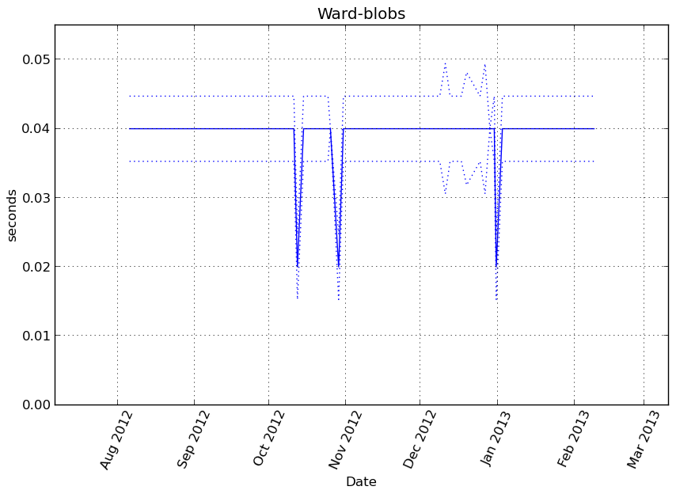Memory usage
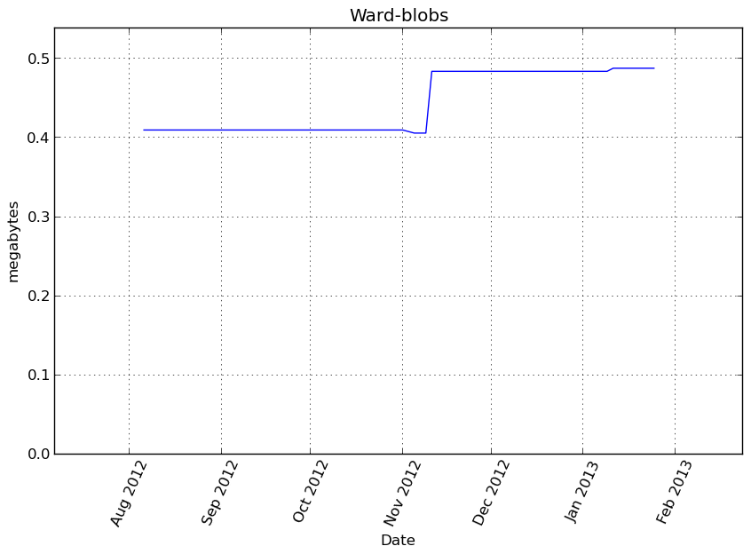Additional output
cProfile
70 function calls in 0.046 seconds
Ordered by: cumulative time
ncalls tottime percall cumtime percall filename:lineno(function)
1 0.000 0.000 0.046 0.046 /home/slave/virtualenvs/cpython-2.7.2/lib/python2.7/site-packages/vbench/benchmark.py:286(f)
1 0.000 0.000 0.046 0.046 <f>:1(<module>)
1 0.000 0.000 0.046 0.046 /tmp/vb_sklearn/sklearn/cluster/hierarchical.py:335(fit)
1 0.000 0.000 0.044 0.044 /tmp/vb_sklearn/sklearn/cluster/hierarchical.py:30(ward_tree)
1 0.000 0.000 0.044 0.044 /home/slave/virtualenvs/cpython-2.7.2/lib/python2.7/site-packages/scipy/cluster/hierarchy.py:423(ward)
1 0.000 0.000 0.044 0.044 /home/slave/virtualenvs/cpython-2.7.2/lib/python2.7/site-packages/scipy/cluster/hierarchy.py:464(linkage)
1 0.037 0.037 0.037 0.037 {scipy.cluster._hierarchy_wrap.linkage_euclid_wrap}
1 0.000 0.000 0.007 0.007 /home/slave/virtualenvs/cpython-2.7.2/lib/python2.7/site-packages/scipy/spatial/distance.py:916(pdist)
1 0.007 0.007 0.007 0.007 {scipy.spatial._distance_wrap.pdist_euclidean_wrap}
1 0.000 0.000 0.001 0.001 /tmp/vb_sklearn/sklearn/cluster/hierarchical.py:228(_hc_cut)
2 0.001 0.000 0.001 0.000 {sklearn.cluster._hierarchical._hc_get_descendent}
1 0.000 0.000 0.000 0.000 /tmp/vb_sklearn/sklearn/utils/validation.py:76(array2d)
3 0.000 0.000 0.000 0.000 {numpy.core.multiarray.zeros}
1 0.000 0.000 0.000 0.000 /tmp/vb_sklearn/sklearn/utils/validation.py:15(_assert_all_finite)
1 0.000 0.000 0.000 0.000 /home/slave/virtualenvs/cpython-2.7.2/lib/python2.7/site-packages/scipy/spatial/distance.py:132(_copy_arrays_if_base_present)
1 0.000 0.000 0.000 0.000 /home/slave/virtualenvs/cpython-2.7.2/lib/python2.7/site-packages/scipy/spatial/distance.py:120(_copy_array_if_base_present)
1 0.000 0.000 0.000 0.000 {method 'sum' of 'numpy.ndarray' objects}
1 0.000 0.000 0.000 0.000 /home/slave/virtualenvs/cpython-2.7.2/lib/python2.7/site-packages/numpy/core/shape_base.py:58(atleast_2d)
1 0.000 0.000 0.000 0.000 /home/slave/virtualenvs/cpython-2.7.2/lib/python2.7/site-packages/numpy/core/numerictypes.py:703(issubsctype)
1 0.000 0.000 0.000 0.000 /home/slave/virtualenvs/cpython-2.7.2/lib/python2.7/site-packages/scipy/sparse/base.py:553(isspmatrix)
1 0.000 0.000 0.000 0.000 /home/slave/virtualenvs/cpython-2.7.2/lib/python2.7/site-packages/scipy/sparse/sputils.py:116(_isinstance)
2 0.000 0.000 0.000 0.000 /home/slave/virtualenvs/cpython-2.7.2/lib/python2.7/site-packages/numpy/core/numerictypes.py:608(obj2sctype)
1 0.000 0.000 0.000 0.000 {method 'astype' of 'numpy.ndarray' objects}
4 0.000 0.000 0.000 0.000 /home/slave/virtualenvs/cpython-2.7.2/lib/python2.7/site-packages/numpy/core/numeric.py:167(asarray)
1 0.000 0.000 0.000 0.000 /home/slave/virtualenvs/cpython-2.7.2/lib/python2.7/site-packages/numpy/core/numeric.py:237(asanyarray)
5 0.000 0.000 0.000 0.000 {numpy.core.multiarray.array}
7 0.000 0.000 0.000 0.000 {isinstance}
1 0.000 0.000 0.000 0.000 {max}
3 0.000 0.000 0.000 0.000 {issubclass}
1 0.000 0.000 0.000 0.000 /home/slave/virtualenvs/cpython-2.7.2/lib/python2.7/site-packages/scipy/cluster/hierarchy.py:912(_convert_to_double)
1 0.000 0.000 0.000 0.000 {_heapq.heappush}
2 0.000 0.000 0.000 0.000 /home/slave/virtualenvs/cpython-2.7.2/lib/python2.7/site-packages/scipy/spatial/distance.py:151(_convert_to_double)
2 0.000 0.000 0.000 0.000 {method 'split' of 'str' objects}
2 0.000 0.000 0.000 0.000 {method 'keys' of 'dict' objects}
1 0.000 0.000 0.000 0.000 /tmp/vb_sklearn/sklearn/externals/joblib/memory.py:484(cache)
7 0.000 0.000 0.000 0.000 {len}
1 0.000 0.000 0.000 0.000 {_heapq.heappushpop}
1 0.000 0.000 0.000 0.000 {callable}
1 0.000 0.000 0.000 0.000 {range}
1 0.000 0.000 0.000 0.000 {method 'disable' of '_lsprof.Profiler' objects}
1 0.000 0.000 0.000 0.000 {method 'append' of 'list' objects}
1 0.000 0.000 0.000 0.000 {method 'lower' of 'str' objects}
LineProfiler
Timer unit: 1e-06 s
File: /tmp/vb_sklearn/sklearn/cluster/hierarchical.py
Function: fit at line 335
Total time: 0.045205 s
Line # Hits Time Per Hit % Time Line Contents
==============================================================
335 def fit(self, X):
336 """Fit the hierarchical clustering on the data
337
338 Parameters
339 ----------
340 X : array-like, shape = [n_samples, n_features]
341 The samples a.k.a. observations.
342
343 Returns
344 -------
345 self
346 """
347 1 5 5.0 0.0 memory = self.memory
348 1 139 139.0 0.3 X = array2d(X)
349 1 6 6.0 0.0 if isinstance(memory, basestring):
350 memory = Memory(cachedir=memory, verbose=0)
351
352 1 5 5.0 0.0 if not self.connectivity is None:
353 if not sparse.issparse(self.connectivity):
354 raise TypeError("`connectivity` should be a sparse matrix or "
355 "None, got: %r" % type(self.connectivity))
356
357 if (self.connectivity.shape[0] != X.shape[0] or
358 self.connectivity.shape[1] != X.shape[0]):
359 raise ValueError("`connectivity` does not have shape "
360 "(n_samples, n_samples)")
361
362 1 4 4.0 0.0 n_samples = len(X)
363 1 3 3.0 0.0 compute_full_tree = self.compute_full_tree
364 1 3 3.0 0.0 if self.connectivity is None:
365 1 4 4.0 0.0 compute_full_tree = True
366 1 4 4.0 0.0 if compute_full_tree == 'auto':
367 # Early stopping is likely to give a speed up only for
368 # a large number of clusters. The actual threshold
369 # implemented here is heuristic
370 compute_full_tree = self.n_clusters > max(100, .02 * n_samples)
371 1 3 3.0 0.0 n_clusters = self.n_clusters
372 1 3 3.0 0.0 if compute_full_tree:
373 1 3 3.0 0.0 n_clusters = None
374
375 # Construct the tree
376 self.children_, self.n_components_, self.n_leaves_, parents = \
377 1 10 10.0 0.0 memory.cache(ward_tree)(X, self.connectivity,
378 1 4 4.0 0.0 n_components=self.n_components,
379 1 43927 43927.0 97.2 copy=self.copy, n_clusters=n_clusters)
380 # Cut the tree
381 1 4 4.0 0.0 if compute_full_tree:
382 1 4 4.0 0.0 self.labels_ = _hc_cut(self.n_clusters, self.children_,
383 1 1071 1071.0 2.4 self.n_leaves_)
384 else:
385 labels = _hierarchical.hc_get_heads(parents, copy=False)
386 # copy to avoid holding a reference on the original array
387 labels = np.copy(labels[:n_samples])
388 # Reasign cluster numbers
389 self.labels_ = np.searchsorted(np.unique(labels), labels)
390 1 3 3.0 0.0 return self
MeanShift-minimadelon¶
Benchmark setup
from sklearn.cluster import MeanShift from deps import load_data kwargs = {} X, y, X_t, y_t = load_data('minimadelon') obj = MeanShift(**kwargs)
Benchmark statement
obj.fit(X)
Execution time
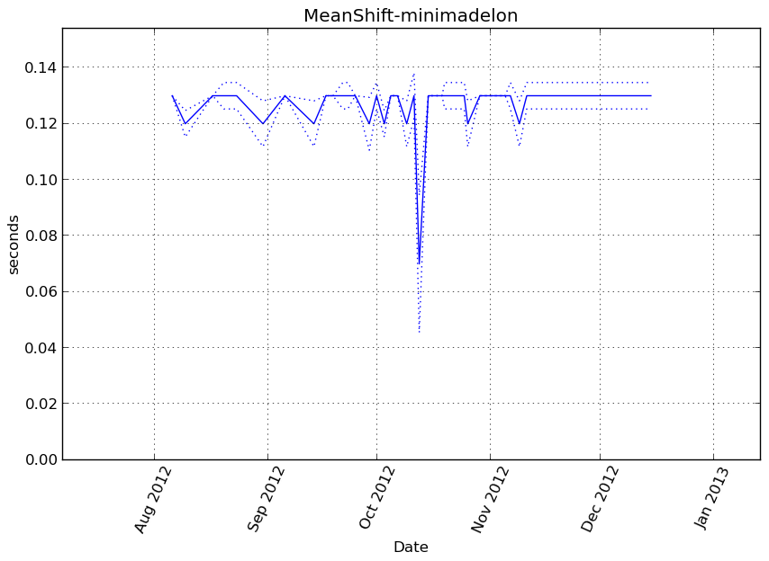Memory usage
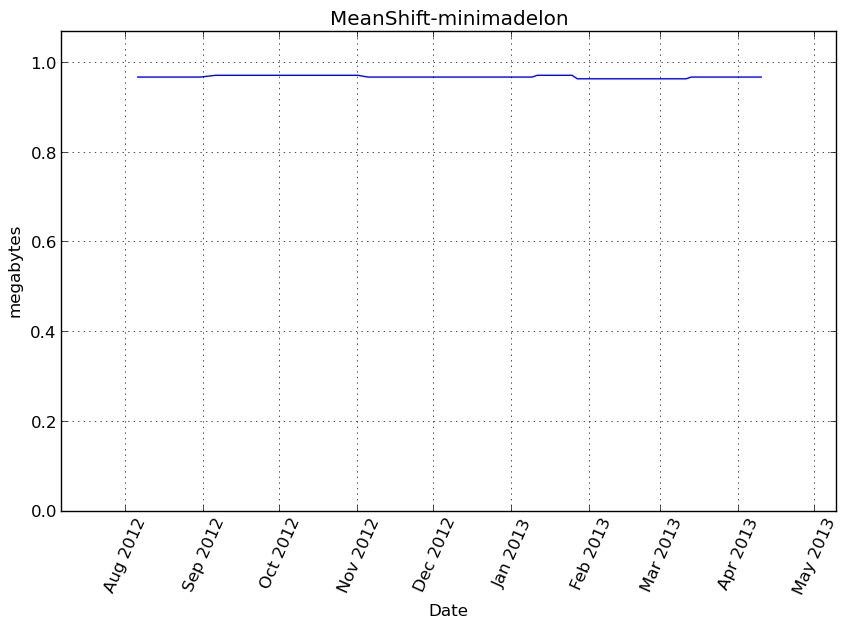Additional output
cProfile
8458 function calls in 0.144 seconds
Ordered by: cumulative time
ncalls tottime percall cumtime percall filename:lineno(function)
1 0.000 0.000 0.144 0.144 /home/slave/virtualenvs/cpython-2.7.2/lib/python2.7/site-packages/vbench/benchmark.py:286(f)
1 0.000 0.000 0.144 0.144 <f>:1(<module>)
1 0.000 0.000 0.144 0.144 /tmp/vb_sklearn/sklearn/cluster/mean_shift_.py:265(fit)
1 0.073 0.073 0.144 0.144 /tmp/vb_sklearn/sklearn/cluster/mean_shift_.py:51(mean_shift)
114 0.001 0.000 0.050 0.000 /tmp/vb_sklearn/sklearn/neighbors/base.py:330(radius_neighbors)
236 0.002 0.000 0.028 0.000 /tmp/vb_sklearn/sklearn/utils/validation.py:76(array2d)
124 0.000 0.000 0.027 0.000 /tmp/vb_sklearn/sklearn/utils/validation.py:111(atleast2d_or_csr)
124 0.002 0.000 0.027 0.000 /tmp/vb_sklearn/sklearn/utils/validation.py:88(_atleast2d_or_sparse)
111 0.012 0.000 0.022 0.000 {method 'query_radius' of 'sklearn.neighbors.ball_tree.BallTree' objects}
236 0.002 0.000 0.016 0.000 /home/slave/virtualenvs/cpython-2.7.2/lib/python2.7/site-packages/numpy/core/shape_base.py:58(atleast_2d)
815 0.016 0.000 0.016 0.000 {numpy.core.multiarray.array}
347 0.001 0.000 0.015 0.000 /home/slave/virtualenvs/cpython-2.7.2/lib/python2.7/site-packages/numpy/core/numeric.py:237(asanyarray)
112 0.000 0.000 0.010 0.000 /home/slave/virtualenvs/cpython-2.7.2/lib/python2.7/site-packages/numpy/core/fromnumeric.py:2299(mean)
112 0.009 0.000 0.009 0.000 {method 'mean' of 'numpy.ndarray' objects}
364 0.004 0.000 0.008 0.000 /tmp/vb_sklearn/sklearn/utils/validation.py:15(_assert_all_finite)
388 0.001 0.000 0.006 0.000 /home/slave/virtualenvs/cpython-2.7.2/lib/python2.7/site-packages/scipy/sparse/base.py:553(isspmatrix)
111 0.001 0.000 0.005 0.000 /tmp/vb_sklearn/sklearn/utils/extmath.py:15(norm)
388 0.003 0.000 0.005 0.000 /home/slave/virtualenvs/cpython-2.7.2/lib/python2.7/site-packages/scipy/sparse/sputils.py:116(_isinstance)
372 0.004 0.000 0.004 0.000 {method 'sum' of 'numpy.ndarray' objects}
111 0.003 0.000 0.003 0.000 /home/slave/virtualenvs/cpython-2.7.2/lib/python2.7/site-packages/scipy/linalg/blas.py:30(get_blas_funcs)
2 0.000 0.000 0.003 0.001 /tmp/vb_sklearn/sklearn/neighbors/base.py:160(kneighbors)
1 0.000 0.000 0.003 0.003 /tmp/vb_sklearn/sklearn/cluster/mean_shift_.py:16(estimate_bandwidth)
467 0.001 0.000 0.002 0.000 /home/slave/virtualenvs/cpython-2.7.2/lib/python2.7/site-packages/numpy/core/numeric.py:167(asarray)
4 0.000 0.000 0.002 0.001 /tmp/vb_sklearn/sklearn/metrics/pairwise.py:567(pairwise_distances)
4 0.000 0.000 0.002 0.001 /tmp/vb_sklearn/sklearn/metrics/pairwise.py:98(euclidean_distances)
111 0.001 0.000 0.002 0.000 /home/slave/virtualenvs/cpython-2.7.2/lib/python2.7/site-packages/numpy/core/shape_base.py:6(atleast_1d)
1 0.001 0.001 0.002 0.002 {method 'query' of 'sklearn.neighbors.ball_tree.BallTree' objects}
776 0.001 0.000 0.001 0.000 {method 'split' of 'str' objects}
4 0.000 0.000 0.001 0.000 /tmp/vb_sklearn/sklearn/neighbors/base.py:578(fit)
112 0.000 0.000 0.001 0.000 /home/slave/virtualenvs/cpython-2.7.2/lib/python2.7/site-packages/numpy/core/numeric.py:1791(ones)
4 0.000 0.000 0.001 0.000 /tmp/vb_sklearn/sklearn/neighbors/base.py:96(_fit)
520 0.001 0.000 0.001 0.000 {isinstance}
4 0.000 0.000 0.001 0.000 /tmp/vb_sklearn/sklearn/metrics/pairwise.py:56(check_pairwise_arrays)
111 0.001 0.000 0.001 0.000 {method 'reshape' of 'numpy.ndarray' objects}
4 0.000 0.000 0.001 0.000 /tmp/vb_sklearn/sklearn/utils/validation.py:33(safe_asarray)
4 0.000 0.000 0.001 0.000 /tmp/vb_sklearn/sklearn/utils/extmath.py:70(safe_sparse_dot)
112 0.000 0.000 0.000 0.000 {method 'fill' of 'numpy.ndarray' objects}
112 0.000 0.000 0.000 0.000 {numpy.core.multiarray.empty}
1072 0.000 0.000 0.000 0.000 {len}
4 0.000 0.000 0.000 0.000 {numpy.core._dotblas.dot}
4 0.000 0.000 0.000 0.000 /tmp/vb_sklearn/sklearn/utils/validation.py:22(assert_all_finite)
458 0.000 0.000 0.000 0.000 {method 'append' of 'list' objects}
8 0.000 0.000 0.000 0.000 /home/slave/virtualenvs/cpython-2.7.2/lib/python2.7/site-packages/numpy/core/fromnumeric.py:1379(sum)
116 0.000 0.000 0.000 0.000 {getattr}
222 0.000 0.000 0.000 0.000 {method 'get' of 'dict' objects}
5 0.000 0.000 0.000 0.000 /home/slave/virtualenvs/cpython-2.7.2/lib/python2.7/abc.py:128(__instancecheck__)
111 0.000 0.000 0.000 0.000 {max}
1 0.000 0.000 0.000 0.000 /tmp/vb_sklearn/sklearn/utils/validation.py:234(check_random_state)
4 0.000 0.000 0.000 0.000 /tmp/vb_sklearn/sklearn/neighbors/unsupervised.py:78(__init__)
9 0.000 0.000 0.000 0.000 /home/slave/virtualenvs/cpython-2.7.2/lib/python2.7/_weakrefset.py:68(__contains__)
1 0.000 0.000 0.000 0.000 /home/slave/virtualenvs/cpython-2.7.2/lib/python2.7/site-packages/numpy/core/fromnumeric.py:1774(amax)
1 0.000 0.000 0.000 0.000 {method 'max' of 'numpy.ndarray' objects}
4 0.000 0.000 0.000 0.000 /tmp/vb_sklearn/sklearn/neighbors/base.py:79(_init_params)
1 0.000 0.000 0.000 0.000 {sorted}
3 0.000 0.000 0.000 0.000 {numpy.core.multiarray.where}
1 0.000 0.000 0.000 0.000 {method 'argsort' of 'numpy.ndarray' objects}
1 0.000 0.000 0.000 0.000 {method 'flatten' of 'numpy.ndarray' objects}
1 0.000 0.000 0.000 0.000 {numpy.core.multiarray.zeros}
1 0.000 0.000 0.000 0.000 {numpy.core.multiarray.arange}
6 0.000 0.000 0.000 0.000 /tmp/vb_sklearn/sklearn/cluster/mean_shift_.py:134(<lambda>)
1 0.000 0.000 0.000 0.000 {method 'items' of 'dict' objects}
1 0.000 0.000 0.000 0.000 {method 'disable' of '_lsprof.Profiler' objects}
LineProfiler
Timer unit: 1e-06 s
File: /tmp/vb_sklearn/sklearn/cluster/mean_shift_.py
Function: fit at line 265
Total time: 0.152819 s
Line # Hits Time Per Hit % Time Line Contents
==============================================================
265 def fit(self, X):
266 """ Compute MeanShift
267
268 Parameters
269 -----------
270 X : array-like, shape=[n_samples, n_features]
271 Input points.
272 """
273 self.cluster_centers_, self.labels_ = \
274 1 4 4.0 0.0 mean_shift(X, bandwidth=self.bandwidth, seeds=self.seeds,
275 1 2 2.0 0.0 bin_seeding=self.bin_seeding,
276 1 152810 152810.0 100.0 cluster_all=self.cluster_all)
277 1 3 3.0 0.0 return self
MeanShift-blobs¶
Benchmark setup
from sklearn.cluster import MeanShift from deps import load_data kwargs = {} X, y, X_t, y_t = load_data('blobs') obj = MeanShift(**kwargs)
Benchmark statement
obj.fit(X)
Execution time
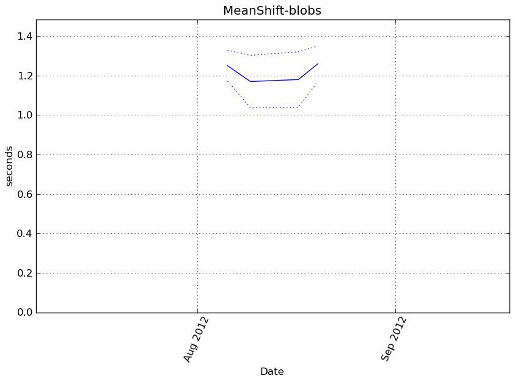Memory usage
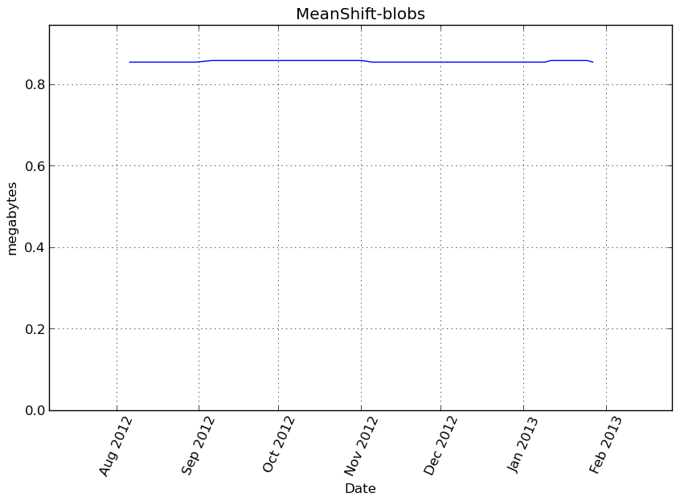Additional output
cProfile
79127 function calls in 1.501 seconds
Ordered by: cumulative time
ncalls tottime percall cumtime percall filename:lineno(function)
1 0.000 0.000 1.501 1.501 /home/slave/virtualenvs/cpython-2.7.2/lib/python2.7/site-packages/vbench/benchmark.py:286(f)
1 0.000 0.000 1.501 1.501 <f>:1(<module>)
1 0.000 0.000 1.501 1.501 /tmp/vb_sklearn/sklearn/cluster/mean_shift_.py:265(fit)
1 0.920 0.920 1.501 1.501 /tmp/vb_sklearn/sklearn/cluster/mean_shift_.py:51(mean_shift)
1121 0.008 0.000 0.398 0.000 /tmp/vb_sklearn/sklearn/neighbors/base.py:330(radius_neighbors)
1120 0.146 0.000 0.244 0.000 {method 'query_radius' of 'sklearn.neighbors.ball_tree.BallTree' objects}
2248 0.015 0.000 0.165 0.000 /tmp/vb_sklearn/sklearn/utils/validation.py:76(array2d)
1127 0.003 0.000 0.146 0.000 /tmp/vb_sklearn/sklearn/utils/validation.py:111(atleast2d_or_csr)
1127 0.006 0.000 0.143 0.000 /tmp/vb_sklearn/sklearn/utils/validation.py:88(_atleast2d_or_sparse)
1121 0.003 0.000 0.085 0.000 /home/slave/virtualenvs/cpython-2.7.2/lib/python2.7/site-packages/numpy/core/fromnumeric.py:2299(mean)
1121 0.082 0.000 0.082 0.000 {method 'mean' of 'numpy.ndarray' objects}
3379 0.035 0.000 0.066 0.000 /tmp/vb_sklearn/sklearn/utils/validation.py:15(_assert_all_finite)
2248 0.015 0.000 0.064 0.000 /home/slave/virtualenvs/cpython-2.7.2/lib/python2.7/site-packages/numpy/core/shape_base.py:58(atleast_2d)
1120 0.011 0.000 0.063 0.000 /tmp/vb_sklearn/sklearn/utils/extmath.py:15(norm)
7864 0.055 0.000 0.055 0.000 {numpy.core.multiarray.array}
3368 0.007 0.000 0.050 0.000 /home/slave/virtualenvs/cpython-2.7.2/lib/python2.7/site-packages/numpy/core/numeric.py:237(asanyarray)
3395 0.007 0.000 0.048 0.000 /home/slave/virtualenvs/cpython-2.7.2/lib/python2.7/site-packages/scipy/sparse/base.py:553(isspmatrix)
1120 0.039 0.000 0.045 0.000 /home/slave/virtualenvs/cpython-2.7.2/lib/python2.7/site-packages/scipy/linalg/blas.py:30(get_blas_funcs)
3395 0.028 0.000 0.041 0.000 /home/slave/virtualenvs/cpython-2.7.2/lib/python2.7/site-packages/scipy/sparse/sputils.py:116(_isinstance)
1 0.000 0.000 0.033 0.033 /tmp/vb_sklearn/sklearn/cluster/mean_shift_.py:16(estimate_bandwidth)
2 0.000 0.000 0.032 0.016 /tmp/vb_sklearn/sklearn/neighbors/base.py:160(kneighbors)
1 0.031 0.031 0.031 0.031 {method 'query' of 'sklearn.neighbors.ball_tree.BallTree' objects}
3383 0.030 0.000 0.030 0.000 {method 'sum' of 'numpy.ndarray' objects}
4495 0.009 0.000 0.021 0.000 /home/slave/virtualenvs/cpython-2.7.2/lib/python2.7/site-packages/numpy/core/numeric.py:167(asarray)
1120 0.007 0.000 0.018 0.000 /home/slave/virtualenvs/cpython-2.7.2/lib/python2.7/site-packages/numpy/core/shape_base.py:6(atleast_1d)
1121 0.003 0.000 0.011 0.000 /home/slave/virtualenvs/cpython-2.7.2/lib/python2.7/site-packages/numpy/core/numeric.py:1791(ones)
6790 0.009 0.000 0.009 0.000 {method 'split' of 'str' objects}
4532 0.007 0.000 0.007 0.000 {isinstance}
1120 0.006 0.000 0.006 0.000 {method 'reshape' of 'numpy.ndarray' objects}
1121 0.004 0.000 0.004 0.000 {method 'fill' of 'numpy.ndarray' objects}
10405 0.004 0.000 0.004 0.000 {len}
1121 0.003 0.000 0.003 0.000 {numpy.core.multiarray.empty}
4 0.000 0.000 0.003 0.001 /tmp/vb_sklearn/sklearn/neighbors/base.py:578(fit)
4 0.002 0.001 0.003 0.001 /tmp/vb_sklearn/sklearn/neighbors/base.py:96(_fit)
4488 0.002 0.000 0.002 0.000 {method 'append' of 'list' objects}
1125 0.002 0.000 0.002 0.000 {getattr}
2 0.000 0.000 0.001 0.001 /tmp/vb_sklearn/sklearn/metrics/pairwise.py:567(pairwise_distances)
2 0.000 0.000 0.001 0.001 /tmp/vb_sklearn/sklearn/metrics/pairwise.py:98(euclidean_distances)
1120 0.001 0.000 0.001 0.000 {max}
2240 0.001 0.000 0.001 0.000 {method 'get' of 'dict' objects}
4 0.000 0.000 0.000 0.000 /tmp/vb_sklearn/sklearn/utils/validation.py:33(safe_asarray)
2 0.000 0.000 0.000 0.000 /tmp/vb_sklearn/sklearn/metrics/pairwise.py:56(check_pairwise_arrays)
1 0.000 0.000 0.000 0.000 /home/slave/virtualenvs/cpython-2.7.2/lib/python2.7/site-packages/numpy/core/fromnumeric.py:1774(amax)
1 0.000 0.000 0.000 0.000 {method 'max' of 'numpy.ndarray' objects}
4 0.000 0.000 0.000 0.000 /tmp/vb_sklearn/sklearn/utils/validation.py:22(assert_all_finite)
2 0.000 0.000 0.000 0.000 /tmp/vb_sklearn/sklearn/utils/extmath.py:70(safe_sparse_dot)
4 0.000 0.000 0.000 0.000 /home/slave/virtualenvs/cpython-2.7.2/lib/python2.7/site-packages/numpy/core/fromnumeric.py:1379(sum)
5 0.000 0.000 0.000 0.000 /home/slave/virtualenvs/cpython-2.7.2/lib/python2.7/abc.py:128(__instancecheck__)
1 0.000 0.000 0.000 0.000 /tmp/vb_sklearn/sklearn/utils/validation.py:234(check_random_state)
4 0.000 0.000 0.000 0.000 /tmp/vb_sklearn/sklearn/neighbors/unsupervised.py:78(__init__)
9 0.000 0.000 0.000 0.000 /home/slave/virtualenvs/cpython-2.7.2/lib/python2.7/_weakrefset.py:68(__contains__)
2 0.000 0.000 0.000 0.000 {numpy.core._dotblas.dot}
4 0.000 0.000 0.000 0.000 /tmp/vb_sklearn/sklearn/neighbors/base.py:79(_init_params)
1 0.000 0.000 0.000 0.000 {method 'argsort' of 'numpy.ndarray' objects}
1 0.000 0.000 0.000 0.000 {sorted}
1 0.000 0.000 0.000 0.000 {method 'flatten' of 'numpy.ndarray' objects}
1 0.000 0.000 0.000 0.000 {numpy.core.multiarray.zeros}
1 0.000 0.000 0.000 0.000 {numpy.core.multiarray.arange}
1 0.000 0.000 0.000 0.000 {numpy.core.multiarray.where}
1 0.000 0.000 0.000 0.000 /tmp/vb_sklearn/sklearn/cluster/mean_shift_.py:134(<lambda>)
1 0.000 0.000 0.000 0.000 {method 'items' of 'dict' objects}
1 0.000 0.000 0.000 0.000 {method 'disable' of '_lsprof.Profiler' objects}
LineProfiler
Timer unit: 1e-06 s
File: /tmp/vb_sklearn/sklearn/cluster/mean_shift_.py
Function: fit at line 265
Total time: 1.71134 s
Line # Hits Time Per Hit % Time Line Contents
==============================================================
265 def fit(self, X):
266 """ Compute MeanShift
267
268 Parameters
269 -----------
270 X : array-like, shape=[n_samples, n_features]
271 Input points.
272 """
273 self.cluster_centers_, self.labels_ = \
274 1 4 4.0 0.0 mean_shift(X, bandwidth=self.bandwidth, seeds=self.seeds,
275 1 2 2.0 0.0 bin_seeding=self.bin_seeding,
276 1 1711334 1711334.0 100.0 cluster_all=self.cluster_all)
277 1 2 2.0 0.0 return self